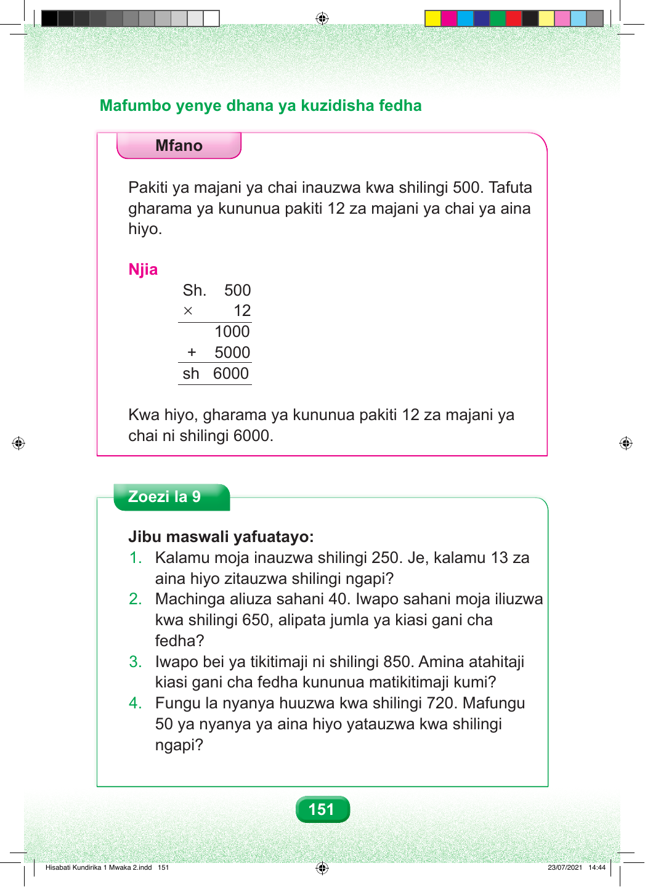

Mafumbo yenye dhana ya kuzidisha fedha Mfano Pakiti ya majani ya chai inauzwa kwa shilingi 500. Tafuta gharama ya kununua pakiti 12 za majani ya chai ya aina hiyo. Njia Sh. 500 × 12 1000 + 5000 sh 6000 Kwa hiyo, gharama ya kununua pakiti 12 za majani ya chai ni shilingi 6000. Zoezi la 9 Jibu maswali yafuatayo: 1. Kalamu moja inauzwa shilingi 250. Je, kalamu 13 za aina hiyo zitauzwa shilingi ngapi? 2. Machinga aliuza sahani 40. Iwapo sahani moja iliuzwa kwa shilingi 650, alipata jumla ya kiasi gani cha fedha? 3. Iwapo bei ya tikitimaji ni shilingi 850. Amina atahitaji kiasi gani cha fedha kununua matikitimaji kumi? 4. Fungu la nyanya huuzwa kwa shilingi 720. Mafungu 50 ya nyanya ya aina hiyo yatauzwa kwa shilingi ngapi? 151 Hisabati Kundirika 1 Mwaka 2.indd 151 23/07/2021 14:44